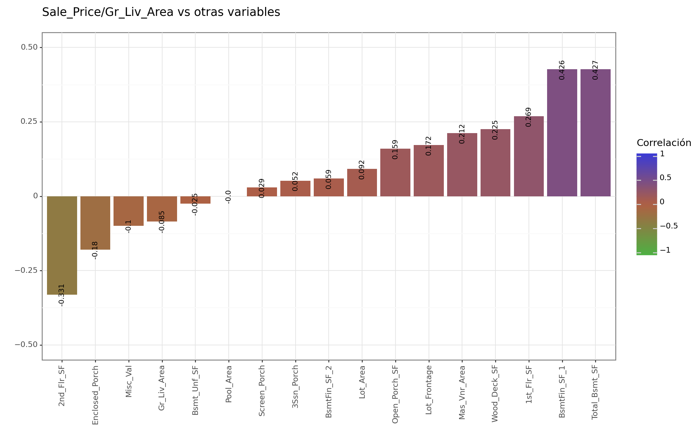
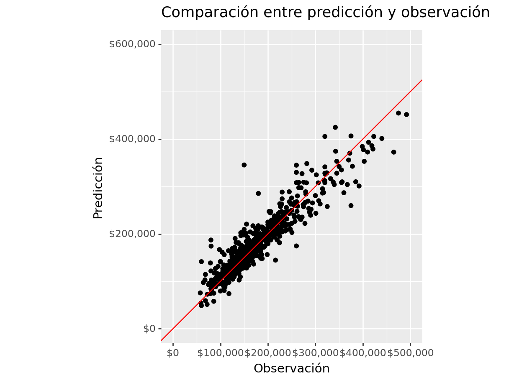

import pandas as pd
from siuba import *
import numpy as np
from plotnine import *
from plydata.tidy import pivot_wider, pivot_longer
import matplotlib.pyplot as plt
from sklearn.model_selection import train_test_split
from sklearn.feature_selection import f_regression, mutual_info_regression
from plydata.one_table_verbs import pull
from mizani.formatters import comma_format, dollar_formatEDA
Analisís de las variables
Descripción de las variables
Variables continuas y númericas
| Variable | Descrición |
|---|---|
| Lot_Frontage (Continua) | Loguitud que conectan la calle con la propiedad (en pies) |
| Lot Area (Continua) | Tamaño del lote en pies cuadrados |
| Mas Vnr Area (Continua) | Área de revestimiento de mampostería en pies cuadrados |
| BsmtFin SF 1 (Continua) | Area del sótano terminada Tipo 1 en pies cuadrados |
| BsmtFin SF 2 (Continua) | Area del sótano terminada Tipo 2 en pies cuadrados |
| Bsmt Unf SF (Continua) | Área sin terminar del sótano en pies cuadrados |
| Total Bsmt SF (Continua) | Área total del sótano |
| 1st Flr SF (Continua) | Pies cuadrqados del primer piso |
| 2nd Flr SF (Continua) | Pies cuadrados del segundo piso |
| Low Qual Area SF (Continua) | Pies cuadrados terminados de baja calidad |
| Gr Liv Area (Continua) | Superficie habitable sobre el nivel del suelo en pies cuadrados |
| Wood Deck SF (Continua) | Área de cubierta de madera en pies cuadrados |
| Open Porch SF (Continua) | Área abierta del porche en pies cuadrados |
| Enclose Porch (Continua) | Área cerrada del proche en pies cuadrados |
| 3-Ssn Porch (Continua) | Área de porche de tres estaciones en pies cuadrados |
| Screen Porch (Continua) | Área del porche cubierto en pies cuadrados |
| Pool Area (Continua) | Área de la piscina en pies cuadrados |
| Misc Val (Continua) | Valor de la característica miscelanea |
| Sale_Price (Continua) | Precio de venta. |
| Year Built (Discreta) | Año original de construcción |
| Year Remod/Add (Discreta) | Fecha de remodelación (la misma que la fecha de construcción si no se ha remodelado) |
| Bsmt Full Bath (Discreta) | Baños completos en el sótano |
| Bsmt Half Bath (Discreta) | Medios baños en el sótano |
| Full Bath (Discreta) | Baños completos sobre el nivel del suelo |
| Half Bath (Discreta) | Medios baños sobre el nivel del suelo |
| Kitchen (Discreta) | Concinas sobre el nivel del suelo |
| TotRmsAbvGrd | Total de habitaciones sobre el nivel del suelo (no incluye baños) |
| Fireplaces (Discreta) | Número de chimeneas |
| Garage Yr Blt (Discreta) | Año en que se construyó el garage |
| Garage Cars (Discreta) | Tamaño del garage en cuanto a capacidad para autos. |
| Mo Sold (Discreta) | Mes de la venta (MM) |
| Yr Sold (Discreta) | Año de la venta (YYYY) |
Varaibles categóricas
| Variable | Descrición |
|---|---|
| MS_Subclass (Nominal) | Identifica el tipo de vivienda de la venta |
| MS_Zoning (Nominal) | Identifica la clasificación de la zona asociada a la venta |
| Street (Nominal) | Tipo de camino de acceso a la propiedad |
| Alley (Nominal) | Tipo de callejón de acceso a la propiedad |
| Lot Contour (Nominal) | Planitud de la propiedad |
| Lot Config (Nominal) | Configurarición del lote |
| Neightboorhood (Nominal) | Ubicación física dentro de los límites de la ciudad de Ames |
| Condition 1 (Nominal) | Proximidad a varias condiciones |
| Condition 2 (Nominal) | Proximidad a varias condiciones (Si más de una es presente) |
| Bldg Type (Nominal) | Tipo de vivienda |
| House Style (Nominal) | Estilo de la vivienda |
| Roof Style (Nominal) | Tipo de techo |
| Roof Matl (Nominal) | Material del techo |
| Exterior 1 (Nominal) | Revestimiento exterior de la casa |
| Exterior 2 (Nominal) | Revestimiento exterior de la casa (Si hay más de un material) |
| Mas Vnr Type (Nominal) | Tipo de revestimiento de mampostería |
| Foundation (Nominal) | Tipo de cimentación |
| Heating (Nominal) | Tipo de calefacción |
| Central Air (Nominal) | Aire acondicionado centralizado |
| Garage Type (Nominal) | Ubicación del garage |
| Misc Feature (Nominal) | Característica miscelánea no cubierta en otras categorías |
| Sale Type (Nominal) | Tipo de venta |
| Sale Condition (Nominal) | Condicón de la venta. |
| Functional (Ordinal) | Funcionalidad del hogar (suponga que es típico a menos que se justifiquen deducciones) |
| FireplaceQu (Ordinal) | Calidad de las chimeneas |
| Lot Shape (Ordinal) | Forma general de la propiedad |
| Pool QC (Ordinal) | Calidad de la piscina |
| Utilities (Ordinal) | Tipo de utilidades disponibles |
| Land Slope (Ordinal) | Pendiente de la propiedad |
| Overall Qual (Ordinal) | Califica el material general y el acabado de la casa. |
| Overall Cond (Ordinal) | Califica la condición general de la casa |
| Exter Qual (Ordinal) | Evalua la calidad materiales de los exteriores |
| Exter Cond (Ordinal) | Evalua la condición presente del materia en el exterior |
| Bsmt Qua (Ordinal) | Evalua la altura del sótano |
| Bsmt Cond (Ordinal) | Evalua la condición general del sótano |
| Bsmt Exposure (Ordinal) | Se refiere a paredes a nivel de jardín o de salida |
| BsmtFin Type 1 (Ordinal) | Calificación del area terminada del sótano |
| BsmtFin Type 2 (Ordinal) | Clasificación del área terminada del sótano (si hay varios tipos) |
| Heating QC (Ordinal) | Calidad y condición de la calefacción |
| Electrical (Ordinal) | Sistema electrico |
| Kitchen Qaul (Ordinal) | Calidad de la cocina |
| Garage Qual (Ordinal) | Calidad del Garage |
| Garage cond (Ordinal) | Condicón del garage |
| Paved Drive (Ordinal) | Camino pavimentado. |
| Garage Finish (Ordnal) | El interior del garage esta terminado |
| Fence (Ordinal) | Calidad de la cerca. |
Analísis de Sale Price
A continuación se muestra el split inicial
ames = (pd.read_excel( '../data/proyecto_ames_train.xlsx' ).rename(columns = lambda x: x.replace (' ','_') )
>> mutate (Price_4_GLA = _.SalePrice/_.Gr_Liv_Area))
ames.drop(index= 821, inplace=True)
y = ames >> pull("Price_4_GLA")
X = select(ames, -_.SalePrice, -_.Price_4_GLA)
numeric_column = ames >> pull("Price_4_GLA")
quartiles = np.percentile(numeric_column, [25, 50, 75])
# Crea una nueva variable categórica basada en los cuartiles
stratify_variable = pd.cut(
numeric_column,
bins=[float('-inf'), quartiles[0], quartiles[1], quartiles[2], float('inf')],
labels=["Q1", "Q2", "Q3", "Q4"]
)
ames_x_train, ames_x, ames_y_train, ames_y = train_test_split(
X, y,
test_size = 0.30,
random_state = 12345,
stratify = stratify_variable
)
stratify_variable = pd.cut(
ames_y ,
bins=[float('-inf'), quartiles[0], quartiles[1], quartiles[2], float('inf')],
labels=["Q1", "Q2", "Q3", "Q4"]
)
ames_x_test, ames_x_val, ames_y_test, ames_y_val = train_test_split(
ames_x, ames_y,
test_size = 0.5,
random_state = 12345,
stratify = stratify_variable
)
Sale_Price_train= ames_y_train * np.array(ames_x_train.Gr_Liv_Area)
Sale_Price_test = ames_y_test * ames_x_test.Gr_Liv_Area
Sale_Price_validation = ames_y_val * ames_x_val.Gr_Liv_Area
print('Totales:\t', ames.shape[0],'\nTraining:\t', ames_y_train.shape[0],'\nTesting:\t', ames_y_test.shape[0],'\nValidation:\t', ames_y_val.shape[0])Totales: 1392
Training: 974
Testing: 209
Validation: 209summary = "count: 974\nmean: $180,757.27 \nstd: $80,744.88\nQ1: $129,062.5\nQ2:$160,000\nQ3: $213,099.75\nmin: $12,789\nmax:$755,000"Code
# plt.figure()
(
ggplot(aes(y=Sale_Price_train, x=0))+
geom_violin( fill='#702C27',
style='right',
alpha=0.6)+
geom_jitter(aes(x=np.zeros(974 )-0.21),
size=1,
alpha=0.4,
color='#006DC8',
width=0.2,
random_state=7)+
geom_boxplot(aes(x=np.zeros(974 )-0.21),width=0.4,
color='#182E40',
alpha=0.1,
outlier_alpha=1,
outlier_color='#235C6C',
outlier_size=1.5)+
coord_flip()+
theme_classic()+
ggtitle('Distribución de los precios de venta')+
scale_y_continuous(labels=dollar_format(big_mark=','))+
ylab('Precio de venta')+
annotate('text',x=0.3,y=500000, label=summary,ymax=400000)+
geom_text(ha='left',label=summary, x=0.3, y=500000, size=10, fontweight=1)+
theme(axis_ticks_minor_y=element_blank(),
axis_ticks_major_y=element_blank(),
axis_text_y=element_blank()
)+
theme(figure_size=(8, 6))
)
A diferencia de la distribución de los precios se venta de la casa, el precio por pie cuadrado habitable de la casa parece tener un comportamiento más normal:
Code
summary = "count: 974\nmean: $122.11\nstd: $32.60\nQ1: $100.69\nQ2:$120.64\nQ3: $141.27\nmin: $17.87\nmax:$276.25"
# plt.figure()
(
ggplot(aes(y=ames_y_train, x=0))+
geom_violin( fill='#702C27',
style='right',
alpha=0.6)+
geom_jitter(aes(x=np.zeros(974 )-0.21),
size=1,
alpha=0.4,
color='#006DC8',
width=0.2,
random_state=7)+
geom_boxplot(aes(x=np.zeros(974 )-0.21),width=0.4,
color='#182E40',
alpha=0.1,
outlier_alpha=1,
outlier_color='#235C6C',
outlier_size=1.5)+
coord_flip()+
theme_classic()+
ggtitle('Distribución de los precios de venta')+
scale_y_continuous(labels=dollar_format(big_mark=','))+
ylab('Precio de venta')+
annotate('text',x=0.3,y=200, label=summary,ymax=200)+
geom_text(ha='left',label=summary, x=0.3, y=500000, size=10, fontweight=1)+
theme(axis_ticks_minor_y=element_blank(),
axis_ticks_major_y=element_blank(),
axis_text_y=element_blank()
)+
theme(figure_size=(8, 6))
)
Code
params={'loc':ames_y_train.mean(), 'scale':ames_y_train.std()}
(
ggplot(aes(sample=ames_y_train))+
geom_qq(alpha = 0.3,distribution='norm', dparams=params)+
stat_qq_line(distribution='norm', dparams=params,color = "red")+
scale_y_continuous(labels=dollar_format(big_mark=',', digits = 0)) +
scale_x_continuous(labels=dollar_format(big_mark=',', digits = 0)) +
xlab("Cuantilies de la dist. normal teórica") + ylab("Cuantiles de Sale Price") +
ggtitle("QQ-Plot N~(mean=180,996.79, sd=81,186.69)")+
theme_seaborn()
)
Variables Continuas VS Transformación de Sale_Price
Code
ames_train = ames_x_train.copy()
ames_train['Sale_Price/Gr_Liv_Area'] = ames_y_train
correlation_data = (
ames_train[continuas].corr().melt( ignore_index=False,
var_name='var1').reset_index() >>
select( _.var1,
_.var2 == _.index,
_.cor == _.value )
)
labels=(
correlation_data >> case_when({_.cor.between(-0.3, 0.3):'',
_.cor>0.99991: '',
True :_.cor.round(2).astype(str)})
)
(
correlation_data >>
arrange(-_.cor,_.var1) >>
# filter (_.var1!=_.var2) >>
mutate(labb=labels)>>
ggplot(aes(x='var1', y='var2', fill= 'cor'))+
geom_tile()+
geom_label(aes(label='labb'), size=6)+
scale_fill_gradientn(colors=['#0092ff','#e6d6c7','#FF1400'],
limits=(-1,1),
name='Correlación')+
ggtitle('Mapa de calor de correlaciones para variables continuas')+
xlab('')+ylab('')+#guides(fill=guide_legend(title="New Legend Title"))+
theme(axis_text_x=element_text(rotation=90,hjust = -1),
figure_size=(8,6))
)
Como podemos observar para ser que las varaibles de 'BsmtFin_SF_1', '2nd_Flr_SF', 'Total_Bsmt_SF' son las que tienen correlaciones más grandes con el precio de venta por el precio por pie cuadrado habitable. En el gráfico sólo se muestran etiquetas de correlaciones que no estan en el intervalo (-0.3.0.3).
Code
(
ames_train[continuas].corr().reset_index(drop=False)
>> select(_.spgl == _['Sale_Price/Gr_Liv_Area'],_.index)
>> filter(_.spgl != 1)
>> mutate (labels = np.round(_.spgl, 3))
>> arrange(_.spgl)
>> ggplot(aes(y='spgl', x='reorder(index,spgl)', fill='spgl'))
+ geom_col()
+ geom_text(aes(label = 'labels') , size=8, va='center', angle=90)
+ ylim([-0.5,0.5])
+ labs(title = 'Sale_Price/Gr_Liv_Area vs otras variables', y='', x='')
+ scale_fill_gradient2(low='#4EB043',
mid='#B05F43',
high= '#3A3AD5',
midpoint=0,
limits=(-1,1),
name='Correlación')
+ theme_bw()
+ theme(axis_text_x=element_text(angle=90))
)
Precios dependiendo la ubicación
Code
(
ames_train
>> group_by(_.Neighborhood)
>> summarize(media = np.mean(_['Sale_Price/Gr_Liv_Area']), desv=np.std(_['Sale_Price/Gr_Liv_Area']))
>> mutate( max_err = _.media + _.desv, min_err = _.media - _.desv)
>> arrange(_.media)
>> ggplot(aes(x='reorder(Neighborhood,media)', y='media') )
+ geom_errorbar(aes(ymin='min_err', ymax='max_err'),width=0.3, position=position_dodge(0.9))+geom_point()
+ theme_bw()
+ theme(axis_text_x=element_text(angle=90))
+ scale_y_continuous(labels=dollar_format(big_mark=',', digits = 0))
+coord_flip()
+labs(y='Precio promedio por pie cuadrado de área habitable', x='')
)
Variables relacionadas con el sótano
Se puede ver que se tiene una relación líneal creciente entre Total_Bsmt_SF y Sale_Price\ Gr_Liv_Area, en la siguiente gráfica tambien podemos ver como varios puntos se acumulan en Total_Bsmt_SF = 0 debido a que estas casas no cuentan con sótano
Code
(
ames_x_train
>> ggplot( aes(y=ames_y_train, x= 'Total_Bsmt_SF'))
+ geom_point(size=1,alpha=0.4)
+ geom_smooth(color='red')
+ scale_y_continuous(labels = dollar_format(digits=0, big_mark=',') )
+xlim([0,2500])
+ labs(title = 'Total_Bsmt_SF vs Sale Price/ Gr_Liv_Area', x='Total_Bsmt_SF', y='Sale Price/ Gr_Liv_Area')
+ theme_538()
)
En cuanto a las variables categóricas relacionadas al sótano encontramos lo siguiente:
Code
cat_columns = pd.Series(['Bldg_Type',
'Bsmt_Exposure',
'Central_Air',
'Condition_1',
'Condition_2',
'Electrical',
'Fence',
'Foundation',
'Garage_Finish',
'Garage_Type',
'Misc_Feature',
'Paved_Drive',
'Heating_QC',
'Overall_Cond',
'MS_SubClass',
'MS_Zoning',
'Bsmt_Cond',
'BsmtFin_Type_1',
'BsmtFin_Type_2',
'House_Style',
'Lot_Shape',
'Neighborhood'])
for category in cat_columns[cat_columns.str.contains('Bsmt')]:
titulo='Categoría analazada: {}'.format(category)
(ames_train >> ggplot(aes(y= 'Sale_Price/Gr_Liv_Area', x= 'Total_Bsmt_SF', color= '{}'.format(category)))
+ geom_point(alpha= 0.5, show_legend=False) + geom_smooth(color='black', method = 'lm')
+xlim([0,3000])
+labs(x='Área total del sótano', y='Precio por pie cuadrado de área habitable bruta', title=titulo)
+ facet_wrap('~{}'.format(category))+theme_538 ()) 


Puntos a considerar:
En
Bsmt_Exposurese puede notar que la relación positiva entre las variables se mantiene, y no parece cambiar si se altera la exposicón del sótano. Además se muestran elementos conTotal_Bmst_SF>0 que caen en la categoría de No basement, lo cual puede deberse a un error.En
Bsmt_Condse puede ver que la relación de las variables si cambia dependiendo de la condición del sótano, además en la condición de Excellent y Poor se tienen muy pocas observaciones.En
Bsmt_Type_1se tienen relaciones demaciado planas en su mayoria, a excepción de GLQ y Unf.En
Bsmt_Type_2se tiene el mismo caso que en el anterior. Además se muestran elementos conTotal_Bmst_SF>0 que caen en la categoría de No basement, lo cual puede deberse a un error.
Fuciones personalizadas
Code
def importance_from_model (test_frame, y_obs, selected_columns, pipeline, actual_mse, n_permutations=50 ,trans_pred= False ):
performance_losses = []
for i in range(test_frame[selected_columns].shape[1]):
loss = []
for j in range(n_permutations):
test_frame_permuted = test_frame[selected_columns].copy()
test_frame_permuted.iloc[:, i] = np.random.permutation(test_frame_permuted.iloc[:, i])
if trans_pred == False:
y_pred_permuted = pipeline.predict(test_frame_permuted)
else:
y_pred_permuted = pipeline.predict(test_frame_permuted)* test_frame_permuted.Gr_Liv_Area
mse_permuted = mean_squared_error(y_obs, y_pred_permuted)
loss.append(mse_permuted)
performance_losses.append(loss)
performance_losses = performance_losses/np.sum(performance_losses, axis=0)
mean_losses = np.mean(performance_losses, axis=1)
std_losses = np.std(performance_losses, axis=1)
importance_df = pd.DataFrame({
'Variable': selected_columns,
'Mean_Loss': mean_losses,
'Std_Loss': std_losses
})
return importance_df
def adjusted_r2_score(y_true, y_pred, n, p):
r2 = r2_score(y_true, y_pred)
adjusted_r2 = 1 - (1 - r2) * (n - 1) / (n - p - 1)
return adjusted_r2
def div_columns(X, c1, c2):
X["c1_c2"] = X[c1]/ X[c2]
return X
def adj_r(y_o, y_p , p, n):
r2_adj = 1 - (n - 1) / (n - p - 1) * (1 - r2_score(y_o, y_p))
def get_metrics (y_pred, y_obs,predictors):
me = np.mean(y_obs - y_pred)
mae = mean_absolute_error(y_obs, y_pred)
mape = mean_absolute_percentage_error(y_obs, y_pred)
mse = mean_squared_error(y_obs, y_pred)
rmse = np.sqrt(mse)
r2 = r2_score(y_obs, y_pred)
n = len(y_obs) # Número de observaciones
p = predictors # Número de predictores
r2_adj = 1 - (n - 1) / (n - p - 1) * (1 - r2)
metrics_data = {
"Metric": ["ME", "MAE", "MAPE", "MSE", "RMSE", "R2", "R2Adj"],
"Value": [me, mae, mape, mse, rmse, r2, r2_adj]
}
return pd.DataFrame(metrics_data).set_index('Metric')
def rmv_elements (list_of_elements, complete_list):
for element in list_of_elements:
complete_list.remove(element)
return complete_list
def validation_results(x_val,y_val, pipeline , n_preds):
y_pred = pipeline.predict(x_val)
ames_test = (
ames_x_val >>
mutate(Sale_Price_Pred = y_pred, Sale_Price =y_val))
##### Métricas de desempeño
y_obs = ames_test["Sale_Price"]
y_pred = ames_test["Sale_Price_Pred"]
return get_metrics(y_pred, y_obs, n_preds)
def intersection(lst1, lst2):
lst3 = [value for value in lst1 if value in lst2]
return lst3
def check_cv (df, param_p = False):
if param_p == False:
(df
>> mutate(RMSE = abs(_.mean_test_neg_mean_squared_error)**0.5, MAPE = abs (_.mean_test_mape))
>> pivot_longer(
cols=['mean_test_r2', 'MAPE','RMSE'],
names_to='parameter',
values_to='value')
>> ggplot( aes(x = "param_n_neighbors", y = "value", shape = "param_weights", color= 'param_metric'))
+ geom_point(alpha = 0.9,position=position_dodge(width=0.1))
+ facet_wrap("~parameter",ncol =1, scales = "free_y")
+ labs( y = '',x= 'Parámetro: vecinos cercanos K' ,shape = 'Ponderación',color = 'Métrica' )).draw(True)
else:
(df
>> mutate(RMSE = abs(_.mean_test_neg_mean_squared_error)**0.5 , MAPE = abs (_.mean_test_mape))
>> pivot_longer(
cols=['mean_test_r2', 'MAPE','RMSE'],
names_to='parameter',
values_to='value')
>> ggplot( aes(x = "param_n_neighbors", y = "value", shape = "param_weights", color= 'param_metric',size = 'param_p'))
+ geom_point(alpha = 0.9,position=position_dodge(width=0.1))
+ facet_wrap("~parameter",ncol =1, scales = "free_y")
+ labs( y = '',x= 'Parámetro: vecinos cercanos K' ,shape = 'Ponderación',color = 'Métrica' )).draw(True)
def div_columns(X, c1, c2, feature_name ):
name = feature_name+'_c_'
X[c1] = X[c1].astype(float)
X[c2] = X[c2].astype(float)
X[name] = X[c1]/ X[c2]
return X[[name]]
def div_columns2(X, c1, c2, feature_name ):
name = feature_name+'_c_'
X[c1] = X[c1].astype(float)
X[c2] = X[c2].astype(float)
X[name] = X[c1]/ X[c2]
return X[[name]].fillna(0)
def collapse(X, c1, dic):
return X[[c1]].replace(dic)
def cross_interactions (X, num, cat, return_inputs = 'none'):
return_cols = []
df = X.filter(regex=(cat)).copy()
for column in df.columns.to_list():
name = column + '_x_'+ num
X[name] = df[column] * X[num]
return_cols.append(name)
if return_inputs == 'none':
return X[return_cols]
elif return_inputs == 'both':
return X[return_cols + df.columns.to_list() + [num]]
elif return_inputs == 'num':
return X[return_cols + [num]]
else:
return X[return_cols+ df.columns.to_list()]
def cross_interactions2 (X, num, cat, return_inputs = 'none'):
return_cols = []
df = X.filter(regex=(cat)).copy()
df2 = X.filter(regex=(num)).copy()
for col_num in df2.columns.to_list():
for column in df.columns.to_list():
name = column + '_x_'+ col_num
X[name] = df[column] * X[col_num]
return_cols.append(name)
if return_inputs == 'none':
return X[return_cols]
elif return_inputs == 'both':
return X[return_cols + df.columns.to_list() + df2.columns.to_list()]
elif return_inputs == 'num':
return X[return_cols + df2.columns.to_list()]
else:
return X[return_cols+ df.columns.to_list()]
def antique_func(X,yb, yr):
return (X >> mutate (Antique_c_ = 2023 - _[yb], Last_remod_c_ = 2023 - _[yr], Antique2_c_=(2023 - _[yb])**2)
>> select (_.contains ('_c_')))Regresión Líneal
Preparación de los datos
En la documentación del dataset podemos encontrar información útil para saber como imputar los NA’s , se creó un ColumnTransformer() con el nombre de clean_and_imputer, este transformador hace lo siguiente:
Elimina columnas que potencialmente podría provocar data leakage
Imputación de NA’s de variables categorias y númericas de acuerdo a la documentación de los datos.
from sklearn.compose import make_column_selector
from sklearn.compose import ColumnTransformer
from sklearn.impute import SimpleImputer
#Sólo 4 casas tienen Piscina/ por lo tanto esta variable no es útil
ames_x_train >> select(_.contains('Pool')) >> filter (_.Pool_Area==0) Pool_Area Pool_QC
1253 0 NaN
120 0 NaN
1027 0 NaN
40 0 NaN
465 0 NaN
... ... ...
270 0 NaN
977 0 NaN
823 0 NaN
852 0 NaN
1303 0 NaN
[970 rows x 2 columns]
n_usefull = ['Sale_Type', 'Sale_Condition', 'Pool_QC', 'Pool_Area', 'Yr_Sold']
# NA de Alley are no_alley ACCES
# na de Mas_Vnr_Type es none
# NA EN Bsmt_Qual es No_basement
#remember quit "No_Basement" cat
# electrical imput mode
# no fire place imput 'No_Fireplace'
clean_and_imputers = ColumnTransformer(
[('not_usefull_variables', 'drop', n_usefull),
('Impute_Alley', SimpleImputer(
missing_values=np.nan,
strategy='constant',
fill_value= 'No_Alley_Access'), ['Alley']),
('Impute_Mas_Vnr_Type', SimpleImputer(
missing_values=np.nan,
strategy='constant',
fill_value= 'None'), ['Mas_Vnr_Type']),
('Impute_Mas_Vnr_Area', SimpleImputer(
missing_values=np.nan,
strategy='constant',
fill_value= 0), ['Mas_Vnr_Area']),
('Impute_Lot_Frontage', SimpleImputer(
missing_values=np.nan,
strategy='mean'), ['Lot_Frontage']),
('Impute_Fireplace_Qu', SimpleImputer(
missing_values=np.nan,
strategy='constant',
fill_value= 'No_Fireplace'), ['Fireplace_Qu']),
('Impute_Electrical', SimpleImputer(
missing_values=np.nan,
strategy='most_frequent'),['Electrical']),
('Impute_Bsmt_Cat', SimpleImputer(
missing_values=np.nan,
strategy='constant',
fill_value= 'No_Basement'), make_column_selector(pattern = 'Bsmt',dtype_include = 'object')),
('Impute_Bsmt_Numeric', SimpleImputer(
missing_values=np.nan,
strategy='constant',
fill_value= 0), make_column_selector(pattern = 'Bsmt',dtype_exclude = 'object')),
('Impute_Garage', SimpleImputer(
missing_values=np.nan,
strategy='constant',
fill_value= 'No_Garage'), make_column_selector(pattern = 'Garage',dtype_include = 'object')),
('Impute_Garage_numeric', SimpleImputer(
missing_values=np.nan,
strategy='constant',
fill_value= 0), make_column_selector(pattern = 'Garage',dtype_exclude = 'object')),
('Impute_Fence', SimpleImputer(
missing_values=np.nan,
strategy='constant',
fill_value= 'No_Fence'), ['Fence']),
('Impute_Misc_Feature', SimpleImputer(
missing_values=np.nan,
strategy='constant',
fill_value= 'None'), ['Misc_Feature'])
],
remainder= 'passthrough',
verbose_feature_names_out = False
).set_output(transform = 'pandas')
clean_ames_x_train = clean_and_imputers.fit_transform(ames_x_train)Feature Engineering
En este ColumnTransformer() se crean diferentes variables o se módifican algunas otras, en resumen el siguente transformador hace lo siguiente:
Se crean 11 variables que en su mayoría se refieren a proporciones.
Se colapsan las columnas de las variables
Overall_CondyOverall_Qual.Todas estas transformaciones fueron hechas con
FunctionTransformer()utilizando funciones creadas de manera p[ropia que se encuentran en el apartado de Funciones personalizadas
Code
cond ={1: 'Poor', 2:'Poor',3:'Poor',4:'Average', 5:'Average',6:'Average', 7:'Good_or_Excellent', 8:'Good_or_Excellent', 9:'Good_or_Excellent', 10 :'Good_or_Excellent'}
feature_eng = ColumnTransformer(
[('collapse_cond', FunctionTransformer(
collapse,
feature_names_out = None,
kw_args={'c1': 'Overall_Cond', 'dic' : cond }
), ['Overall_Cond']),
('collapse_cond2', FunctionTransformer(
collapse,
feature_names_out = None,
kw_args={'c1': 'Overall_Qual', 'dic' : cond }
), ['Overall_Qual']),
('Area_Per_Room', FunctionTransformer(
div_columns,
feature_names_out = None,
kw_args={'c1': 'TotRms_AbvGrd', 'c2': 'Gr_Liv_Area', 'feature_name' : 'Area_Per_Room'}
), ['TotRms_AbvGrd', 'Gr_Liv_Area']),
('Wood_propGLA', FunctionTransformer(
div_columns,
feature_names_out = None,
kw_args={'c1': 'Wood_Deck_SF', 'c2': 'Gr_Liv_Area', 'feature_name' : 'Wood_propGLA'}
), ['Wood_Deck_SF', 'Gr_Liv_Area']),
('MVNRA_prop', FunctionTransformer(
div_columns,
feature_names_out = None,
kw_args={'c1': 'Mas_Vnr_Area', 'c2': 'Lot_Area', 'feature_name' : 'MVNRA_propLA'}
), ['Mas_Vnr_Area', 'Lot_Area']),
('2nd_Flr_SF_propGLA', FunctionTransformer(
div_columns,
feature_names_out = None,
kw_args={'c1': '2nd_Flr_SF', 'c2': 'Gr_Liv_Area', 'feature_name' : '2nd_Flr_SF_propGLA'}
), ['2nd_Flr_SF', 'Gr_Liv_Area']),
('Bsmt_Prop', FunctionTransformer(
div_columns,
feature_names_out = None,
kw_args={'c1': 'Total_Bsmt_SF', 'c2': 'Gr_Liv_Area', 'feature_name' : 'Bsmt_Prop'}
),['Total_Bsmt_SF', 'Gr_Liv_Area'] ),
('Time_var', FunctionTransformer(
antique_func,
feature_names_out = None,
kw_args={'yb': 'Year_Built', 'yr': 'Year_Remod/Add'}
), ['Year_Built', 'Year_Remod/Add']),
('Gr_Liv_Area / Loot_Area', FunctionTransformer(
div_columns,
feature_names_out = None,
kw_args={'c1': 'Gr_Liv_Area', 'c2': 'Lot_Area', 'feature_name' : 'Gr_Liv_A/Loot_A'}
),['Gr_Liv_Area', 'Lot_Area'] ),
('Garage_Prop_overGLA', FunctionTransformer(
div_columns,
feature_names_out = None,
kw_args={'c1': 'Garage_Area', 'c2': 'Gr_Liv_Area', 'feature_name' : 'Garage_Prop_overGLA'}
),['Garage_Area', 'Gr_Liv_Area'] ),
('1s_Floor_prop', FunctionTransformer(
div_columns,
feature_names_out = None,
kw_args={'c1': '1st_Flr_SF', 'c2': 'Gr_Liv_Area', 'feature_name' : '1s_Floor_prop'}
),['1st_Flr_SF', 'Gr_Liv_Area'] ),
('just_select', 'passthrough', ['Total_Bsmt_SF','2nd_Flr_SF', 'TotRms_AbvGrd', '1st_Flr_SF', 'Year_Built', 'Year_Remod/Add', 'Garage_Area', 'Lot_Area', 'Gr_Liv_Area', 'Mas_Vnr_Area','Wood_Deck_SF' ])],
verbose_feature_names_out = False,
remainder = 'passthrough').set_output(transform = 'pandas')C:\Users\HP\DOCUME~1\VIRTUA~1\CD_AMA~1\lib\site-packages\sklearn\preprocessing\_function_transformer.py:343: UserWarning: With transform="pandas", `func` should return a DataFrame to follow the set_output API.Code
feature_eng_df = feature_eng.fit_transform(clean_ames_x_train)
my_features = (feature_eng_df>> select (_.contains('_c_'))).columns.to_list()Preprocesado de los datos
Una vez se limpiaron los datos y se crearon variables, se define el preprocesado para hacer el One Hot Encoding y la estandarización de variables seleccionadas, preprocesor_1 es un transformador que estandariza algunas variables númericas y aplica OneHotEncoder() a todas las variables del tipo Object, colapsando categorias que tienen menos de 12 datos.
num_cols =['Wood_Deck_SF',
'1st_Flr_SF',
'Open_Porch_SF',
'Enclosed_Porch',
'Lot_Area',
'Total_Bsmt_SF',
'Garage_Area',
'Gr_Liv_Area',
'Bsmt_Full_Bath',
'3Ssn_Porch',
'BsmtFin_SF_1',
'BsmtFin_SF_2',
'Bsmt_Unf_SF',
'Bsmt_Half_Bath',
'Kitchen_AbvGr',
'Mas_Vnr_Area',
'Misc_Val',
'Lot_Frontage',
'Bedroom_AbvGr']
preprocessor_1 = ColumnTransformer(
transformers = [
('scaler', StandardScaler(), num_cols),
('just_select', 'passthrough', my_features ),
('OHE', OneHotEncoder(drop='first',handle_unknown='infrequent_if_exist' , sparse_output=False, min_frequency = 12), make_column_selector(dtype_include = 'object'))],
verbose_feature_names_out = False,
remainder = 'passthrough').set_output(transform = 'pandas')
prep_df = preprocessor_1.fit_transform(feature_eng_df)Resultados preeliminares del modelo líneal
lm_pre = Pipeline([
('clean_data', clean_and_imputers),
('feat_eng', feature_eng),
('preprocessor', preprocessor_1),
('regressor', LinearRegression())])
lm_pre.fit(ames_x_train, ames_y_train)Pipeline(steps=[('clean_data',
ColumnTransformer(remainder='passthrough',
transformers=[('not_usefull_variables',
'drop',
['Sale_Type',
'Sale_Condition', 'Pool_QC',
'Pool_Area', 'Yr_Sold']),
('Impute_Alley',
SimpleImputer(fill_value='No_Alley_Access',
strategy='constant'),
['Alley']),
('Impute_Mas_Vnr_Type',
SimpleImputer(fill_value='None',
strategy='constant'),
[...
'Last_remod_c_',
'Antique2_c_',
'Gr_Liv_A/Loot_A_c_',
'Garage_Prop_overGLA_c_',
'1s_Floor_prop_c_']),
('OHE',
OneHotEncoder(drop='first',
handle_unknown='infrequent_if_exist',
min_frequency=12,
sparse_output=False),
<sklearn.compose._column_transformer.make_column_selector object at 0x0000022E93E265F0>)],
verbose_feature_names_out=False)),
('regressor', LinearRegression())])y_pred = lm_pre.predict(ames_x_test) * ames_x_test.Gr_Liv_AreaC:\Users\HP\DOCUME~1\VIRTUA~1\CD_AMA~1\lib\site-packages\sklearn\preprocessing\_encoders.py:202: UserWarning: Found unknown categories in columns [14, 16, 40] during transform. These unknown categories will be encoded as all zerosy_obs = Sale_Price_test
##### Métricas de desempeño
predictores = prep_df.shape[1]
get_metrics(y_pred, y_obs, predictores) Value
Metric
ME -3246.5329
MAE 18364.2473
MAPE 0.1137
MSE 807764265.1494
RMSE 28421.1939
R2 0.8987
R2Adj -2.5123Mejora del modelo
Se crearon dos transformadores adicionales; interactions, el cual crea intercaciónes entre diferentes variables y step_rm el cual elimina columnas que no aportan al modelo antes de aplicar la regresión.
Durante este proceso se fueron creando diferentes interacciones y se removieron variables tomando en cuenta los contrastes de hipotesis del modelo, se dejaron las interacciones que mostraron mejores resultados, al igual que las variables que se decidieron remover para buscar el modelo más parsimonioso.
interactions = ColumnTransformer(
[('Garage_interaction', FunctionTransformer(
cross_interactions, feature_names_out = None,
kw_args={'num': 'Garage_Prop_overGLA_c_', 'cat': 'Garage_Qual', 'return_inputs':'both'}
), make_column_selector ('Garage_Qual|Garage_Prop_overGLA_c_')),
('inter_kitchen', FunctionTransformer(
cross_interactions, feature_names_out = None,
kw_args={'num': 'Kitchen_AbvGr', 'cat': 'Kitchen_Qual', 'return_inputs':'both'}
), make_column_selector ('Kitchen_Qual|Kitchen_AbvGr')),
('Last_remod_c_', FunctionTransformer(
cross_interactions, feature_names_out = None,
kw_args={'num': 'Gr_Liv_A/Loot_A_c_', 'cat': 'Gr_Liv_A/Loot_A_c_', 'return_inputs':'num'}
), make_column_selector ('Gr_Liv_A/Loot_A_c_')),
('1s_Floor_prop_c_|Overall_Q', FunctionTransformer(
cross_interactions, feature_names_out = None,
kw_args={'num': '1s_Floor_prop_c_', 'cat': 'Overall_Q', 'return_inputs':'both'}
), make_column_selector ('1s_Floor_prop_c_|Overall_Q')),
('Bsmt_Qual|Bsmt_Prop_c_', FunctionTransformer(
cross_interactions, feature_names_out = None,
kw_args={'num': 'Bsmt_Prop_c_', 'cat': 'Bsmt_Qual', 'return_inputs':'both'}
), make_column_selector ('Bsmt_Qual|Bsmt_Prop_c_')),
('Area_Per_Room_c_|Overall', FunctionTransformer(
cross_interactions, feature_names_out = None,
kw_args={'num': '2nd_Flr_SF_propGLA_c_', 'cat': 'Antique', 'return_inputs':'both'}
), make_column_selector ('2nd_Flr_SF_propGLA_c_|Antique')),
('MVNRA_propGLA_c_|Mas_Vnr_Type', FunctionTransformer(
cross_interactions, feature_names_out = None,
kw_args={'num': 'MVNRA_propLA_c_', 'cat': 'Mas_Vnr_Type', 'return_inputs':'both'}
), make_column_selector ('MVNRA_propLA_c_|Mas_Vnr_Type')),
('Wood_propGLA_c_|Fireplaces', FunctionTransformer(
cross_interactions, feature_names_out = None,
kw_args={'num': 'Wood_propGLA_c_', 'cat': 'Fireplaces', 'return_inputs':'both'}
), make_column_selector ('Wood_propGLA_c_|Fireplaces')),
('Wood_propGLA_c_|Antique', FunctionTransformer(
cross_interactions, feature_names_out = None,
kw_args={'num': 'Gr_Liv_Area', 'cat': 'Neighborhood', 'return_inputs':'both'}
), make_column_selector ('Gr_Liv_Area|Neighborhood_C|Neighborhood_[STN]')),
('TO_DROP_', 'drop', make_column_selector('No_Basement|No_Garage|Exterior|Land|Fence')) ],
verbose_feature_names_out = False,
remainder='passthrough').set_output(transform = 'pandas')C:\Users\HP\DOCUME~1\VIRTUA~1\CD_AMA~1\lib\site-packages\sklearn\preprocessing\_function_transformer.py:343: UserWarning: With transform="pandas", `func` should return a DataFrame to follow the set_output API.drop_cols=['2nd_Flr_SF',
'3Ssn_Porch',
'Neighborhood_IDOTRR',
'Kitchen_Qual_Gd',
'Alley_No_Alley_Access',
'Neighborhood_StoneBr_x_Gr_Liv_Area',
'BsmtFin_SF_1',
'Alley_Pave',
'Neighborhood_BrkSide',
'Neighborhood_SawyerW_x_Gr_Liv_Area',
# 'Neighborhood_SawyerW'
'Neighborhood_Edwards',
'Bedroom_AbvGr',
'Kitchen_Qual_Fa',
'Bldg_Type_2fmCon',
'Neighborhood_Timber_x_Gr_Liv_Area',
'Neighborhood_Timber',
'Neighborhood_NWAmes_x_Gr_Liv_Area',
'Neighborhood_Somerst_x_Gr_Liv_Area',
'Bldg_Type_Duplex','Condition_1_infrequent_sklearn',
# 'Neighborhood_MeadowV_x_Gr_Liv_Area',
'Roof_Style_infrequent_sklearn',
'Bldg_Type_Twnhs',
'Bldg_Type_TwnhsE',
'BsmtFin_SF_2',
'BsmtFin_Type_1_BLQ',
'BsmtFin_Type_1_GLQ',
'Neighborhood_SWISU_x_Gr_Liv_Area',
'Mas_Vnr_Type_None_x_MVNRA_propLA_c_',
# 'Bsmt_Qual_Fa',
'Neighborhood_ClearCr',
'BsmtFin_Type_1_LwQ',
'BsmtFin_Type_1_Rec',
'Kitchen_Qual_TA',
# 'TotRms_AbvGrd',
'BsmtFin_Type_1_Unf',
'BsmtFin_Type_2_BLQ',
'BsmtFin_Type_2_GLQ',
'BsmtFin_Type_2_LwQ','Neighborhood_CollgCr_x_Gr_Liv_Area',
# '1st_Flr_SF',
# 'Mas_Vnr_Type_None_x_MVNRA_propGLA_c_',
# 'Mas_Vnr_Type_Stone_x_MVNRA_propGLA_c_',
'BsmtFin_Type_2_Rec',
# 'Neighborhood_Mitchel_x_Gr_Liv_Area',
# 'Mas_Vnr_Type_infrequent_sklearn_x_MVNRA_propGLA_c_',
'BsmtFin_Type_2_Unf',
'Kitchen_Qual_TA_x_Kitchen_AbvGr',
'Bsmt_Cond_Gd',
'Fireplace_Qu_Po',
'Bsmt_Cond_TA',
'Bsmt_Cond_infrequent_sklearn',
'Bsmt_Exposure_Mn',
'Bsmt_Exposure_No',
'Foundation_PConc',
# 'Heating_QC_Fa',
# 'Functional_infrequent_sklearn',
# 'Mas_Vnr_Type_infrequent_sklearn',
'Bsmt_Full_Bath',
'Bsmt_Half_Bath',
# 'Bsmt_Qual_Fa',
# 'Condition_1_Norm',
'Bsmt_Qual_Gd_x_Bsmt_Prop_c_',
# 'Exter_Qual_TA',
# 'Exter_Qual_Gd',
# 'Exter_Qual_Fa',
'Bsmt_Qual_No_Basement',
'Bsmt_Qual_No_Basement_x_Bsmt_Prop_c_',
'Mas_Vnr_Type_infrequent_sklearn_x_MVNRA_propLA_c_',
'Bsmt_Qual_TA_x_Bsmt_Prop_c_',
'Bsmt_Unf_SF',
# 'Neighborhood_MeadowV',
'Overall_Cond_Good_or_Excellent',
'Central_Air_Y',
'Condition_1_Feedr',
'Condition_2_infrequent_sklearn',
'Overall_Cond_Poor',
# 'Fireplaces'
# '1st_Flr_SF',
# 'Functional_Typ',
'Electrical_FuseF',
'Electrical_SBrkr',
'Electrical_infrequent_sklearn',
# 'Mas_Vnr_Type_infrequent_sklearn',
# 'Mas_Vnr_Type_None',
'Enclosed_Porch',
'Exter_Cond_Gd',
'Exter_Cond_TA',
'Fireplace_Qu_infrequent_sklearn',
'Foundation_CBlock',
'Foundation_Slab',
'Foundation_infrequent_sklearn',
'Full_Bath',
'Functional_Min2',
'Garage_Cars',
'Garage_Cond_TA',
'Garage_Cond_infrequent_sklearn',
'Garage_Finish_RFn',
'Garage_Finish_Unf',
'Garage_Qual_No_Garage',
'Garage_Qual_No_Garage_x_Garage_Prop_overGLA_c_',
'Garage_Qual_infrequent_sklearn',
'Garage_Qual_infrequent_sklearn_x_Garage_Prop_overGLA_c_',
'Garage_Type_BuiltIn',
'Garage_Type_Detchd',
'Garage_Type_infrequent_sklearn',
'Garage_Yr_Blt',
'Half_Bath',
'Heating_QC_Gd',
'Heating_QC_infrequent_sklearn',
'Heating_infrequent_sklearn',
'House_Style_1Story',
'House_Style_2Story',
'House_Style_SFoyer',
'House_Style_SLvl',
'House_Style_infrequent_sklearn',
'Kitchen_Qual_infrequent_sklearn',
'Kitchen_Qual_infrequent_sklearn_x_Kitchen_AbvGr',
'Last_remod_c_',
'Lot_Area',
'Lot_Config_CulDSac',
'Lot_Config_FR2',
'Lot_Config_Inside',
'Lot_Config_infrequent_sklearn',
'Lot_Frontage',
'Lot_Shape_IR2',
'Lot_Shape_Reg',
'Lot_Shape_infrequent_sklearn',
'Low_Qual_Fin_SF',
'MS_SubClass',
'MS_Zoning_RL',
'MS_Zoning_RM',
'MS_Zoning_infrequent_sklearn',
'Mas_Vnr_Area',
'Misc_Feature_Shed',
'Mo_Sold',
'Neighborhood_Crawfor',
'Neighborhood_NoRidge',
'Neighborhood_NridgHt',
'Neighborhood_Somerst',
'Neighborhood_infrequent_sklearn',
'Open_Porch_SF',
'Overall_Qual_Poor_x_1s_Floor_prop_c_',
'Paved_Drive_P',
'Paved_Drive_Y',
'Roof_Style_Hip',
'Roof_Matl_infrequent_sklearn',
# 'Functional_infrequent_sklearn',
'Wood_Deck_SF',
'Garage_Area','Kitchen_Qual_Gd_x_Kitchen_AbvGr',
'Screen_Porch',
'Street_infrequent_sklearn',
'Total_Bsmt_SF',
'Garage_Qual_TA',
'Kitchen_Qual_Fa_x_Kitchen_AbvGr',
'Utilities_infrequent_sklearn'
#############removing sf
]
step_rm =ColumnTransformer(
[('TO_DROP', 'drop', drop_cols )],
verbose_feature_names_out = False,
remainder='passthrough').set_output(transform = 'pandas')Creación del pipiline final y analísis de resultados
pipeline_linreg = Pipeline([
('clean_data', clean_and_imputers),
('feat_eng', feature_eng),
('preprocessor', preprocessor_1),
('interactions', interactions),
('remove', step_rm),
('regressor', LinearRegression())])
# Entrenar el pipeline
pipeline_linreg.fit(ames_x_train, ames_y_train)Pipeline(steps=[('clean_data',
ColumnTransformer(remainder='passthrough',
transformers=[('not_usefull_variables',
'drop',
['Sale_Type',
'Sale_Condition', 'Pool_QC',
'Pool_Area', 'Yr_Sold']),
('Impute_Alley',
SimpleImputer(fill_value='No_Alley_Access',
strategy='constant'),
['Alley']),
('Impute_Mas_Vnr_Type',
SimpleImputer(fill_value='None',
strategy='constant'),
[...
'Condition_1_infrequent_sklearn',
'Roof_Style_infrequent_sklearn',
'Bldg_Type_Twnhs',
'Bldg_Type_TwnhsE',
'BsmtFin_SF_2',
'BsmtFin_Type_1_BLQ',
'BsmtFin_Type_1_GLQ',
'Neighborhood_SWISU_x_Gr_Liv_Area',
'Mas_Vnr_Type_None_x_MVNRA_propLA_c_',
'Neighborhood_ClearCr',
'BsmtFin_Type_1_LwQ', ...])],
verbose_feature_names_out=False)),
('regressor', LinearRegression())])
transformed_df = step_rm.fit_transform(interactions.fit_transform(prep_df))coefs = pd.DataFrame({
'variable':transformed_df.columns.to_list(),
'coefs': pipeline_linreg.named_steps['regressor'].coef_.round(5)
})
model = sm.OLS(ames_y_train, sm.add_constant(transformed_df) ).fit()
conf_int = model.conf_int().reset_index().rename(columns ={'index': 'variable', 0:"min", 1: 'max'})
p_vals = (
model.pvalues.reset_index()
>> select( _.variable == _.index, _.p_val == -1)
>> mutate (s = case_when({
_.p_val<0.025:'***',
_.p_val<0.05:'**',
_.p_val<0.1:'*',
True:''}))
>> arrange (_.s,- _.p_val)
>>left_join(_, coefs, on = 'variable')
>> left_join(_,conf_int, on = 'variable' )
)
pd.set_option('display.max_rows', 100)
p_vals >> select (_.variable,_.coefs, _.p_val,_.s) variable coefs p_val s
0 Bsmt_Qual_Fa 1.0625 0.8887
1 2nd_Flr_SF_propGLA_c_ 5.5521 0.8112
2 Antique2_c_ 0.0006 0.5675
3 Neighborhood_NAmes -1.4185 0.4639
4 Neighborhood_NWAmes -2.0131 0.4540
5 Overall_Qual_Good_or_Excellent -4.3905 0.3876
6 Garage_Prop_overGLA_c_ 9.3769 0.3487
7 Mas_Vnr_Type_Stone_x_MVNRA_propLA_c_ -119.9844 0.3046
8 Neighborhood_MeadowV -4.9137 0.3041
9 Antique2_c__x_2nd_Flr_SF_propGLA_c_ -0.0031 0.3029
10 Neighborhood_OldTown -2.8015 0.2503
11 Neighborhood_ClearCr_x_Gr_Liv_Area -5.6852 0.2188
12 Neighborhood_SWISU -5.6505 0.1756
13 Neighborhood_Sawyer -5.3706 0.1671
14 Garage_Qual_TA_x_Garage_Prop_overGLA_c_ 14.2732 0.1271
15 Heating_QC_Fa -4.9947 0.1163
16 Bsmt_Qual_Fa_x_Bsmt_Prop_c_ -20.4950 0.0721 *
17 Antique_c__x_2nd_Flr_SF_propGLA_c_ 0.7406 0.0543 *
18 Functional_Typ 4.8209 0.0524 *
19 Neighborhood_Mitchel -5.5635 0.0508 *
20 MVNRA_propLA_c_ 47.7219 0.0345 **
21 Overall_Qual_Good_or_Excellent_x_1s_Floor_prop_c_ 13.9515 0.0303 **
22 Fireplace_Qu_No_Fireplace 6.3777 0.0302 **
23 Neighborhood_SawyerW -5.9192 0.0280 **
24 Neighborhood_Crawfor_x_Gr_Liv_Area 5.9804 0.0270 **
25 Neighborhood_Sawyer_x_Gr_Liv_Area -8.8736 0.0265 **
26 Exter_Cond_infrequent_sklearn -16.1043 0.0233 ***
27 Fireplace_Qu_Gd 5.8299 0.0170 ***
28 Kitchen_AbvGr -1.4949 0.0127 ***
29 Fireplaces_x_Wood_propGLA_c_ -21.9537 0.0111 ***
30 Mas_Vnr_Type_Stone 9.7694 0.0097 ***
31 Misc_Feature_infrequent_sklearn 36.9204 0.0078 ***
32 Fireplace_Qu_TA 6.5016 0.0074 ***
33 Neighborhood_NoRidge_x_Gr_Liv_Area 4.7637 0.0064 ***
34 Area_Per_Room_c_ 5584.8909 0.0057 ***
35 Mas_Vnr_Type_None 4.0196 0.0055 ***
36 Functional_infrequent_sklearn -13.5938 0.0055 ***
37 Mas_Vnr_Type_infrequent_sklearn -15.6790 0.0045 ***
38 Gr_Liv_A/Loot_A_c__x_Gr_Liv_A/Loot_A_c_ 57.4962 0.0040 ***
39 Bsmt_Qual_Gd -6.8440 0.0030 ***
40 Neighborhood_Gilbert -8.0365 0.0022 ***
41 1s_Floor_prop_c_ 72.2488 0.0020 ***
42 Heating_QC_TA -4.1215 0.0012 ***
43 Neighborhood_CollgCr -6.5021 0.0010 ***
44 Gr_Liv_Area 10.1059 0.0010 ***
45 Bsmt_Qual_TA -9.2878 0.0009 ***
46 TotRms_AbvGrd -4.8038 0.0009 ***
47 Neighborhood_NAmes_x_Gr_Liv_Area -6.1865 0.0007 ***
48 Wood_propGLA_c_ 28.9858 0.0004 ***
49 Neighborhood_NridgHt_x_Gr_Liv_Area 8.9138 0.0001 ***
50 Antique_c_ -0.1708 0.0001 ***
51 Condition_1_Norm 6.6969 0.0000 ***
52 1st_Flr_SF -10.9306 0.0000 ***
53 Neighborhood_StoneBr 18.8198 0.0000 ***
54 Fireplaces 9.2093 0.0000 ***
55 Misc_Val -4.3901 0.0000 ***
56 const NaN 0.0000 ***
57 Gr_Liv_A/Loot_A_c_ -83.9920 0.0000 ***
58 Overall_Qual_Poor -25.0629 0.0000 ***
59 Year_Built 0.1708 0.0000 ***
60 Exter_Qual_Fa -40.4738 0.0000 ***
61 Exter_Qual_Gd -24.3753 0.0000 ***
62 Bsmt_Exposure_Gd 11.8623 0.0000 ***
63 Bsmt_Prop_c_ 23.8438 0.0000 ***
64 Year_Remod/Add 0.2730 0.0000 ***
65 Exter_Qual_TA -30.6659 0.0000 ***(
p_vals
>> filter(_.coefs.between(0,1000))
>> ggplot(aes (x= 'reorder(variable, coefs)', y= 'coefs', color = 'p_val'))
+ geom_point()
+ geom_errorbar(aes(ymin='min', ymax='max'),width=0.3)
+ scale_color_gradient(low='#B05F43',
# mid='#B05F43',
high= '#3A3AD5',
limits=(0,1),
name='p_value')
+ labs(y= 'Coeficiente', x = '', title = 'Analisís de variables con \ncoeficiente positivo')
+ coord_flip()
)<Figure Size: (640 x 480)>
(
p_vals
>> filter(_.coefs.between(-1000,0))
>> ggplot(aes (x= 'reorder(variable, coefs)', y= 'coefs', color = 'p_val'))
+ geom_point()
+ geom_errorbar(aes(ymin='min', ymax='max'),width=0.3)
+ scale_color_gradient(low='#B05F43',
# mid='#B05F43',
high= '#3A3AD5',
limits=(0,1),
name='p_value')
+ labs(y= 'Coeficiente', x = '', title = 'Analisís de variables con \ncoeficiente negativo')
+ coord_flip()
)<Figure Size: (640 x 480)>
## PREDICCIONES
y_pred = pipeline_linreg.predict(ames_x_test) * ames_x_test.Gr_Liv_AreaC:\Users\HP\DOCUME~1\VIRTUA~1\CD_AMA~1\lib\site-packages\sklearn\preprocessing\_encoders.py:202: UserWarning: Found unknown categories in columns [14, 16, 40] during transform. These unknown categories will be encoded as all zerosy_obs = Sale_Price_test
##### Métricas de desempeño
predictores = transformed_df.shape[1]
get_metrics(y_pred, y_obs, predictores ) Value
Metric
ME -1363.7185
MAE 15202.0440
MAPE 0.0982
MSE 479763294.1632
RMSE 21903.4996
R2 0.9398
R2Adj 0.9125test = pd.DataFrame() >> mutate (Sale_Price = y_obs, Sale_Price_Pred = y_pred)
(
ggplot(aes(x = y_pred, y =y_obs)) +
geom_point() +
scale_y_continuous(labels = dollar_format(digits=0, big_mark=',') ) +
scale_x_continuous(labels = dollar_format(digits=0, big_mark=',') ) +
geom_abline(color = "red") +
coord_equal() +
labs(
title = "Comparación entre predicción y observación",
x = "Predicción",
y = "Observación")+theme_tufte()
)<Figure Size: (640 x 480)>(
test >>
select(_.Sale_Price, _.Sale_Price_Pred) >>
mutate(error = _.Sale_Price - _.Sale_Price_Pred) >>
ggplot(aes(x = "error")) +
geom_histogram(color = "white", fill = "black") +
geom_vline(xintercept = 0, color = "red") +
scale_x_continuous(labels=dollar_format(big_mark=',', digits=0)) +
ylab("Conteos de clase") + xlab("Errores") +
ggtitle("Distribución de error")+theme_tufte()
)<Figure Size: (640 x 480)>
C:\Users\HP\DOCUME~1\VIRTUA~1\CD_AMA~1\lib\site-packages\plotnine\stats\stat_bin.py:109: PlotnineWarning: 'stat_bin()' using 'bins = 26'. Pick better value with 'binwidth'.(
test >>
select(_.Sale_Price, _.Sale_Price_Pred) >>
mutate(error = _.Sale_Price - _.Sale_Price_Pred) >>
ggplot(aes(sample = "error")) +
geom_qq(alpha = 0.3) + stat_qq_line(color = "red") +
scale_y_continuous(labels=dollar_format(big_mark=',', digits = 0)) +
xlab("Distribución normal") + ylab("Distribución de errores") +
ggtitle("QQ-Plot") +theme_tufte()
)<Figure Size: (640 x 480)>El modelo muestra una \(R^2_{adj}=0.85\) con los datos de test, y tienen un error aproximado del \(\pm10\%\) con respecto del precio real.
y_pred = pipeline_linreg.predict(ames_x_val)*ames_x_val.Gr_Liv_AreaC:\Users\HP\DOCUME~1\VIRTUA~1\CD_AMA~1\lib\site-packages\sklearn\preprocessing\_encoders.py:202: UserWarning: Found unknown categories in columns [6, 7, 26, 32, 40] during transform. These unknown categories will be encoded as all zerosget_metrics(y_pred,Sale_Price_validation,len(transformed_df.columns ) ) Value
Metric
ME -2750.4244
MAE 15593.3053
MAPE 0.0961
MSE 455806378.9331
RMSE 21349.6225
R2 0.9285
R2Adj 0.8960En cuanto al análisis de los residuos, no parece seguir completamente los supuestos, pues visualmete se puede detectar heterocedasticidad, lo cual puede afectar el preformance del modelo.
validation = pd.DataFrame() >> mutate (Sale_Price = Sale_Price_validation, Sale_Price_Pred = pipeline_linreg.predict(ames_x_val)*ames_x_val.Gr_Liv_Area )C:\Users\HP\DOCUME~1\VIRTUA~1\CD_AMA~1\lib\site-packages\sklearn\preprocessing\_encoders.py:202: UserWarning: Found unknown categories in columns [6, 7, 26, 32, 40] during transform. These unknown categories will be encoded as all zeros(
validation >>
ggplot(aes(x = "Sale_Price_Pred", y = "Sale_Price")) +
geom_point() +
scale_y_continuous(labels = dollar_format(digits=0, big_mark=',') ) +
scale_x_continuous(labels = dollar_format(digits=0, big_mark=',')) +
geom_abline(color = "red") +
coord_equal() +
labs(
title = "Comparación entre predicción y observación",
x = "Predicción",
y = "Observación")+theme_tufte()
)<Figure Size: (640 x 480)>
(
validation >>
select(_.Sale_Price, _.Sale_Price_Pred) >>
mutate(error = _.Sale_Price - _.Sale_Price_Pred) >>
ggplot(aes(x = "error")) +
geom_histogram(color = "white", fill = "black") +
geom_vline(xintercept = 0, color = "red") +
scale_x_continuous(labels=dollar_format(big_mark=',', digits=0)) +
ylab("Conteos de clase") + xlab("Errores") +
ggtitle("Distribución de error")+theme_tufte()
)<Figure Size: (640 x 480)>
C:\Users\HP\DOCUME~1\VIRTUA~1\CD_AMA~1\lib\site-packages\plotnine\stats\stat_bin.py:109: PlotnineWarning: 'stat_bin()' using 'bins = 23'. Pick better value with 'binwidth'.(
validation >>
select(_.Sale_Price, _.Sale_Price_Pred) >>
mutate(error = _.Sale_Price - _.Sale_Price_Pred) >>
ggplot(aes(sample = "error")) +
geom_qq(alpha = 0.3) + stat_qq_line(color = "red") +
scale_y_continuous(labels=dollar_format(big_mark=',', digits = 0)) +
xlab("Distribución normal") + ylab("Distribución de errores") +
ggtitle("QQ-Plot") +theme_tufte()
)<Figure Size: (640 x 480)>